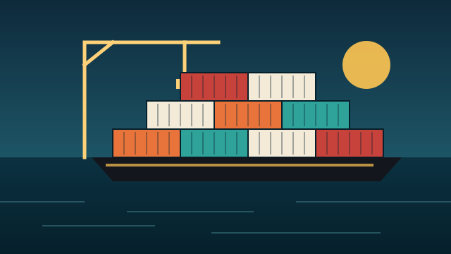

BandarTrade: freight quotes from plain sentences
A live AI-assisted freight quoting and port trading platform serving customers in Bangladesh. I built it alone, from two earlier prototypes to production.

01Overview
Freight forwarders get rate requests as loose text: an email, a chat message, a phone note. Turning that into a priced quote means looking up the route, the carrier rate, trucking, and the client's markup, then converting currency. BandarTrade does that step automatically and leaves a human to review and approve.
It grew out of two earlier prototypes, Smart Quoting Engine and Vela, and is now a live platform for freight forwarding and port trade.
02How a quote works
"2x 40ft containers, Shanghai to Chittagong"
An LLM extracts four things from the request: origin, destination, container size and quantity. The pricing itself is deterministic: the engine applies carrier rates, trucking costs and the client's markup to produce the quote.
03The hard parts
Language models are good at reading messy requests and bad at admitting they don't know a port. The engine handles three edge cases explicitly:
- Hallucinated ports. The model sometimes returns a port that isn't in the database. The engine handles that case instead of quoting a place that doesn't exist.
- Missing route rates. A valid route with no rate on file can't be priced, so the engine handles that case too.
- Currency. Rates and customers live in different currencies, so quotes handle USD-to-BDT conversion.
04The product
Quotes land in a React review and approval UI. It has an English/Bangla toggle for the people who actually use it, an audit log, user management and a chat assistant.
I also wrote the platform architecture and specs for where it goes next: supply chain visibility, vendor communication and transaction efficiency.
05Quality
This is where my QA background earns its keep. Quote logic is covered by Reqnroll BDD API tests and Playwright end-to-end tests, and a demo build deploys through GitHub Actions.